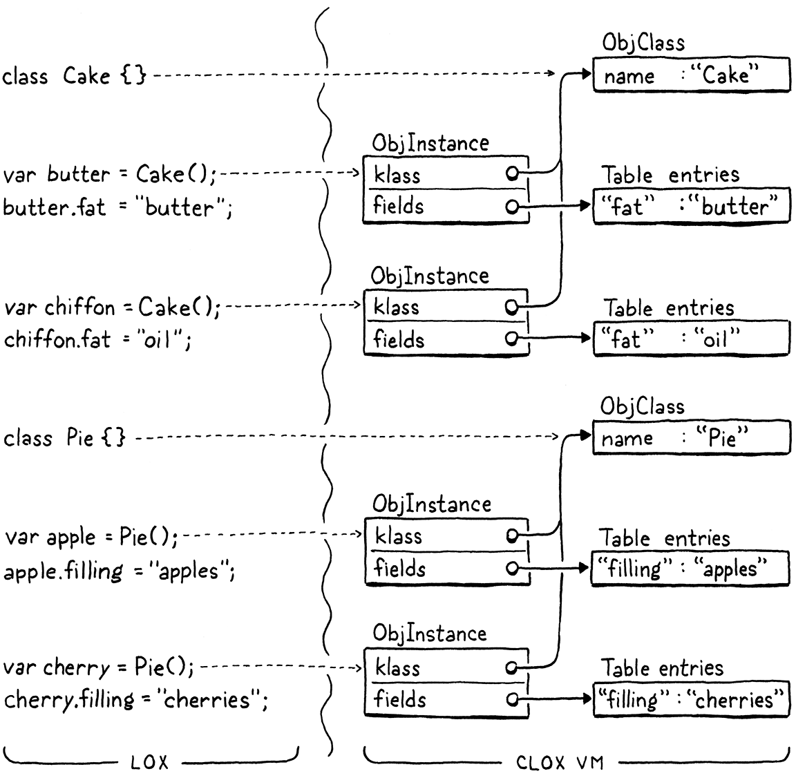

类与实例
对物件太过执着会毁掉你。只有——当你足够珍视一件事物时，它才会拥有自己的生命，不是吗？ 而事物——美丽的事物——存在的全部意义，不就是把你和某种更大的美联系起来吗？
唐娜·塔特（Donna Tartt），《金翅雀》
clox 里最后一块尚未实现的地盘就是面向对象编程。面向对象编程是一 捆彼此缠绕的特性：类、实例、字段、方法、初始化器和继承。用相对高层的 Java，我们把这些 塞进了两章里。现在我们要用 C 编码——那感觉就像用牙签搭埃菲尔铁塔的模型——于是我们打算 用三章走完同一片地形。这让实现过程变成一次悠闲的散步。在闭包和垃圾回收这样 辛苦的章节之后，你该歇口气了。事实上，从这里往后本书应该都会很轻松。
本章我们覆盖前三个特性：类、实例和字段。这是面向对象中有状态的那一面。接下来两章，我们会 把行为和代码复用挂到这些对象上。
27 . 1类对象
在基于类的面向对象语言里，一切都以类开始。它们定义了程序里存在哪些种类的对象，也是用来 生产新实例的工厂。自下而上地说，我们先做它们的运行时表示，再把它接进语言里。
走到这一步，我们给 VM 添加新对象类型的流程已经非常熟悉了。先从一个结构体开始。
} ObjClosure;
加在结构体 ObjClosure 之后
typedef struct { Obj obj; ObjString* name; } ObjClass;
ObjClosure* newClosure(ObjFunction* function);
在 Obj 头部之后，我们存放类的名字。严格说来用户的程序并不需要它，但它让我们能在运行时 显示这个名字，用在堆栈跟踪之类的地方。
这个新类型需要在 ObjType 枚举里加一个对应的分支。
typedef enum {
在枚举 ObjType 内
OBJ_CLASS,
OBJ_CLOSURE,
这个类型还要配一对宏。先是测试一个对象的类型：
#define OBJ_TYPE(value) (AS_OBJ(value)->type)
#define IS_CLASS(value) isObjType(value, OBJ_CLASS)
#define IS_CLOSURE(value) isObjType(value, OBJ_CLOSURE)
然后是把一个 Value 转型成 ObjClass 指针：
#define IS_STRING(value) isObjType(value, OBJ_STRING)
#define AS_CLASS(value) ((ObjClass*)AS_OBJ(value))
#define AS_CLOSURE(value) ((ObjClosure*)AS_OBJ(value))
VM 用这个函数创建新的类对象：
} ObjClass;
加在结构体 ObjClass 之后
ObjClass* newClass(ObjString* name);
ObjClosure* newClosure(ObjFunction* function);
实现在这边：
加在 allocateObject() 之后
ObjClass* newClass(ObjString* name) { ObjClass* klass = ALLOCATE_OBJ(ObjClass, OBJ_CLASS); klass->name = name; return klass; }
基本上全是样板代码。它接收类名字符串并存下来。用户每声明一个新类，VM 就会创建一个新的 这种 ObjClass 结构体来表示它。
当 VM 不再需要一个类时，它这样释放它：
switch (object->type) {
在 freeObject() 内
case OBJ_CLASS: { FREE(ObjClass, object); break; }
case OBJ_CLOSURE: {
我们现在有内存管理器了，所以还需要支持追踪类对象。
switch (object->type) {
在 blackenObject() 内
case OBJ_CLASS: { ObjClass* klass = (ObjClass*)object; markObject((Obj*)klass->name); break; }
case OBJ_CLOSURE: {
当 GC 到达一个类对象时，它会标记类的名字，好让那个字符串也活着。
VM 对一个类能做的最后一个操作是打印它。
switch (OBJ_TYPE(value)) {
在 printObject() 内
case OBJ_CLASS: printf("%s", AS_CLASS(value)->name->chars); break;
case OBJ_CLOSURE:
一个类只是报出自己的名字。
27 . 2类声明
运行时表示到手了，我们准备好给语言加上对类的支持。接下来我们进到解析器里。
static void declaration() {
在 declaration() 内
替换 1 行
if (match(TOKEN_CLASS)) { classDeclaration(); } else if (match(TOKEN_FUN)) {
funDeclaration();
类声明是语句，解析器靠开头的 class 关键字识别它。剩下的编译发生在这里：
加在 function() 之后
static void classDeclaration() { consume(TOKEN_IDENTIFIER, "Expect class name."); uint8_t nameConstant = identifierConstant(&parser.previous); declareVariable(); emitBytes(OP_CLASS, nameConstant); defineVariable(nameConstant); consume(TOKEN_LEFT_BRACE, "Expect '{' before class body."); consume(TOKEN_RIGHT_BRACE, "Expect '}' after class body."); }
紧跟在 class 关键字后面的是类名。我们取那个标识符，把它作为字符串加进外围函数的常量表。
正如你刚看到的，打印一个类会显示它的名字，所以编译器需要把这个名字字符串塞到运行时能
找到的地方。常量表就是干这个的办法。
类的名字还用来把类对象绑定到一个同名的变量上。所以我们在 吃掉它的词法单元之后立刻声明一个同名变量。
接下来，我们发射一条新指令，在运行时真正创建类对象。那条指令的操作数是类名在常量表里的 索引。
在那之后、编译类体之前，我们为类名定义变量。声明这个变量会把它加入作用域，但回想 前面某一章说的：在变量被定义之前，我们不能使用它。对类来说，我们在函数体 之前就定义变量。这样用户就能在类自己各个方法体内部引用这个类了。这对工厂方法之类的东西 很有用——它们要生产这个类的新实例。
最后我们编译函数体。我们还没有方法，所以眼下它只是一对空花括号。Lox 不要求字段在类里 声明，所以函数体——以及解析器——暂时到此为止。
编译器正在发射一条新指令，我们来定义它。
OP_RETURN,
在枚举 OpCode 内
OP_CLASS,
} OpCode;
再加进反汇编器：
case OP_RETURN:
return simpleInstruction("OP_RETURN", offset);
在 disassembleInstruction() 内
case OP_CLASS: return constantInstruction("OP_CLASS", chunk, offset);
default:
对于一个看起来很大的特性来说，解释器侧的支持少得出奇。
break;
}
在 run() 内
case OP_CLASS: push(OBJ_VAL(newClass(READ_STRING()))); break;
}
我们从常量表里加载类名的字符串，传给 newClass()。它创建一个给定名字的新类对象。我们把
它压栈，搞定。如果这个类被绑定在一个全局变量上，那么编译器对 defineVariable() 的调用
会发射代码，把那个对象从栈里存进全局变量表。否则它正好就落在我们需要的位置：一个新
局部变量。
就是这样，我们的 VM 现在支持类了。你可以跑这个：
class Brioche {} print Brioche;
不幸的是，你能对类做的事只有打印，所以接下来是让它们更有用。
27 . 3类的实例
类在一门语言里有两个主要用途：
-
它们是你创建新实例的方式。 有时这需要一个
new关键字，有时是对类对象的一次方法 调用，但不管怎样你通常都要设法按名字提到那个类，才能拿到一个新实例。 -
它们容纳方法。 方法定义了这类对象的所有实例如何表现。
方法要等到下一章，所以现在我们只操心第一部分。类要能创建实例，我们首先需要实例的表示。
} ObjClass;
加在结构体 ObjClass 之后
typedef struct { Obj obj; ObjClass* klass; Table fields; } ObjInstance;
ObjClass* newClass(ObjString* name);
实例知道自己的类——每个实例都有一个指针，指向它所属的那个类。本章我们不太用得上它， 但加上方法之后它会变得至关重要。
对这一章来说更重要的是实例怎么存自己的状态。Lox 允许用户在运行时自由地往实例上加 字段。这意味着我们需要一种可以增长的存储机制。我们可以用动态数组，但我们还想 尽快按名字查找字段。有一种数据结构正好完美契合「快速按名字访问一组值」——而且更方便的是， 我们已经把它实现过了。每个实例用一张哈希表存自己的字段。
我们只需要加一个 include，就搞定了。
#include "chunk.h"
#include "table.h"
#include "value.h"
这个新结构体要配一个新的对象类型。
OBJ_FUNCTION,
在枚举 ObjType 内
OBJ_INSTANCE,
OBJ_NATIVE,
这里我想放慢一点，因为 Lox 这个语言对「类型」的理解，和 VM 这个实现对「类型」的 理解，会以令人困惑的方式彼此错位。在构成 clox 的 C 代码里，有若干种不同的 Obj——ObjString、 ObjClosure 等等。每一种都有自己的内部表示和语义。
在 Lox 这个语言里，用户可以定义自己的类——比如 Cake 和 Pie——然后创建这些类的实例。 从用户的视角看，Cake 的实例和 Pie 的实例是不同类型的对象。但在 VM 的视角里，用户定义的 每一个类都只是另一个 ObjClass 类型的值。同样地，用户程序里的每个实例，不管它是哪个类的 实例，都是一个 ObjInstance。这一个 VM 对象类型就覆盖了所有类的实例。这两个世界之间大致 这样映射：

懂了吗？好，回到实现。我们照例拿到我们的宏。
#define IS_FUNCTION(value) isObjType(value, OBJ_FUNCTION)
#define IS_INSTANCE(value) isObjType(value, OBJ_INSTANCE)
#define IS_NATIVE(value) isObjType(value, OBJ_NATIVE)
还有：
#define AS_FUNCTION(value) ((ObjFunction*)AS_OBJ(value))
#define AS_INSTANCE(value) ((ObjInstance*)AS_OBJ(value))
#define AS_NATIVE(value) \
由于字段是在实例创建之后才加的，那个「构造函数」只需要知道类。
ObjFunction* newFunction();
加在 newFunction() 之后
ObjInstance* newInstance(ObjClass* klass);
ObjNative* newNative(NativeFn function);
我们在这里实现这个函数：
加在 newFunction() 之后
ObjInstance* newInstance(ObjClass* klass) { ObjInstance* instance = ALLOCATE_OBJ(ObjInstance, OBJ_INSTANCE); instance->klass = klass; initTable(&instance->fields); return instance; }
我们存下对实例所属类的引用。然后把字段表初始化成一张空哈希表。一个崭新的小对象诞生了！
在实例生命周期更伤感的那一头，它被释放。
FREE(ObjFunction, object);
break;
}
在 freeObject() 内
case OBJ_INSTANCE: { ObjInstance* instance = (ObjInstance*)object; freeTable(&instance->fields); FREE(ObjInstance, object); break; }
case OBJ_NATIVE:
实例拥有自己的字段表，所以释放实例时我们也释放那张表。我们不显式释放表里的条目， 因为那些对象可能还有其他引用。垃圾回收器会替我们处理那些。这里我们只释放表本身的条目 数组。
说到垃圾回收器，它需要支持追踪实例。
markArray(&function->chunk.constants);
break;
}
在 blackenObject() 内
case OBJ_INSTANCE: { ObjInstance* instance = (ObjInstance*)object; markObject((Obj*)instance->klass); markTable(&instance->fields); break; }
case OBJ_UPVALUE:
如果实例还活着，我们就得让它的类也留着。此外，我们得让实例字段引用的每个对象都活着。
大多数不是根的活对象之所以可达，就是因为某个实例在某个字段里引用了那个对象。幸运的是，
我们已经有一个好用的 markTable() 函数，追踪起来很轻松。
没那么关键但仍然重要的是打印。
break;
在 printObject() 内
case OBJ_INSTANCE: printf("%s instance", AS_INSTANCE(value)->klass->name->chars); break;
case OBJ_NATIVE:
一个实例会打印自己的名字，后面跟上 “instance”。（“instance” 这部分主要是为了让类和实例 打印出来不一样。）
真正好玩的部分在解释器那边。Lox 没有专门的 new 关键字。创建一个类实例的方式，就是像
调用函数一样调用这个类本身。运行时已经支持函数调用，而且它会检查被调用对象的类型，
确保用户不会去调用一个数字或其他无效类型。
我们给那个运行时检查加一个新的分支。
switch (OBJ_TYPE(callee)) {
在 callValue() 内
case OBJ_CLASS: { ObjClass* klass = AS_CLASS(callee); vm.stackTop[-argCount - 1] = OBJ_VAL(newInstance(klass)); return true; }
case OBJ_CLOSURE:
如果被调用的值——也就是求值左括号左边那个表达式得到的对象——是一个类，我们就把它当作 一次构造函数调用。我们创建一个被调用类的新实例，把结果存进栈里。
我们又前进了一步。现在我们能定义类、创建它们的实例了。
class Brioche {} print Brioche();
注意第二行 Brioche 后面现在有了括号。它会打印 “Brioche instance”。
27 . 4Get 与 Set 表达式
我们针对实例的对象表示已经能存状态了，所以剩下的就是把这份功能暴露给用户。字段用 get 表达式和 set 表达式来访问和修改。Lox 也不甘落后，采用了经典的「点号」语法：
eclair.filling = "pastry creme"; print eclair.filling;
那个句点——献给我的英语朋友们，它叫 full stop——作用有点像一个中缀运算符。左边有一个
先求值、产生一个实例的表达式。之后是 .，再跟一个字段名。既然有一个前置操作数，我们把
它作为中缀表达式挂进解析表。
[TOKEN_COMMA] = {NULL, NULL, PREC_NONE},
替换 1 行
[TOKEN_DOT] = {NULL, dot, PREC_CALL},
[TOKEN_MINUS] = {unary, binary, PREC_TERM},
和其他语言一样，. 运算符绑定得很紧，优先级和函数调用里的圆括号一样高。解析器吃掉点号
词法单元之后，会分派到一个新的解析函数。
加在 call() 之后
static void dot(bool canAssign) { consume(TOKEN_IDENTIFIER, "Expect property name after '.'."); uint8_t name = identifierConstant(&parser.previous); if (canAssign && match(TOKEN_EQUAL)) { expression(); emitBytes(OP_SET_PROPERTY, name); } else { emitBytes(OP_GET_PROPERTY, name); } }
解析器预期在点号后面紧接着找到一个属性名。我们把那个词法单元的词素 作为字符串加载进常量表，好让名字在运行时可用。
我们有两条新的表达式形式——getter 和 setter——都由这一个函数处理。如果我们在字段名后面 看到一个等号，那必然是一条给字段赋值的 set 表达式。但我们并不总是允许编译字段后面 的等号。考虑：
a + b.c = 3
按 Lox 的文法，这在语法上是非法的，也就是说我们的 Lox 实现有责任检测并报告这个错误。
如果 dot() 默默地把 = 3 那部分也解析了，我们就会错误地把这段代码理解成用户写了：
a + (b.c = 3)
问题在于，set 表达式里 = 那侧的优先级比 . 那部分低得多。解析器可能在优先级太高、
不允许出现 setter 的语境里调用 dot()。为了避免错误地放行这种情况，我们只在
canAssign 为真时才解析并编译等号那部分。如果 canAssign 为假时出现了等号词法单元，
dot() 会原样留下它然后返回。那种情况下，编译器最终会退回到 parsePrecedence()，
它停在这个意料之外的 = 上（它仍是下一个词法单元）并报告错误。
如果我们在确实允许等号的语境里找到了一个 =，我们就编译它后面那个表达式。之后我们
发射一条新的 OP_SET_PROPERTY 指令。它带一个操作数，表示属性名
在常量表里的索引。如果我们没有编译出 set 表达式，就假定它是 getter，发射一条
OP_GET_PROPERTY 指令，它同样带一个属性名的操作数。
现在正是定义这两条新指令的好时机。
OP_SET_UPVALUE,
在枚举 OpCode 内
OP_GET_PROPERTY, OP_SET_PROPERTY,
OP_EQUAL,
再加上反汇编支持：
return byteInstruction("OP_SET_UPVALUE", chunk, offset);
在 disassembleInstruction() 内
case OP_GET_PROPERTY: return constantInstruction("OP_GET_PROPERTY", chunk, offset); case OP_SET_PROPERTY: return constantInstruction("OP_SET_PROPERTY", chunk, offset);
case OP_EQUAL:
27 . 4 . 1解释 getter 与 setter 表达式
滑到运行时，我们先从 get 表达式开始，因为它稍微简单一点。
}
在 run() 内
case OP_GET_PROPERTY: { ObjInstance* instance = AS_INSTANCE(peek(0)); ObjString* name = READ_STRING(); Value value; if (tableGet(&instance->fields, name, &value)) { pop(); // 实例。 push(value); break; } }
case OP_EQUAL: {
当解释器执行到这条指令时，点号左边的表达式已经求过值，结果实例在栈顶。我们从常量池里 读出字段名，在实例的字段表里查它。如果哈希表里有那个名字的条目，我们把实例弹出来， 把条目的值作为结果压栈。
当然，字段可能并不存在。在 Lox 里我们把这定义为运行时错误。所以我们加一个检查， 一旦发生就中止。
push(value);
break;
}
在 run() 内
runtimeError("Undefined property '%s'.", name->chars);
return INTERPRET_RUNTIME_ERROR;
}
case OP_EQUAL: {
还有另一个你大概已经注意到的失败模式要处理。上面那段代码假定 点号左边的表达式确实求值成了 ObjInstance。但没有东西能阻止用户这样写：
var obj = "not an instance"; print obj.field;
用户的程序是错的，但 VM 仍然得有几分体面地处理它。现在它会把 ObjString 的那些位误当成 ObjInstance，然后——我也不知道——着火什么的，反正绝对不体面。
在 Lox 里，只有实例被允许拥有字段。你没法往字符串或数字上塞字段。所以我们在访问任何 字段之前，得先检查这个值是不是实例。
case OP_GET_PROPERTY: {
在 run() 内
if (!IS_INSTANCE(peek(0))) { runtimeError("Only instances have properties."); return INTERPRET_RUNTIME_ERROR; }
ObjInstance* instance = AS_INSTANCE(peek(0));
如果栈上的值不是实例，我们报告运行时错误并安全退出。
当然，在实例都没有任何字段的时候，get 表达式也不怎么有用。为此我们需要 setter。
return INTERPRET_RUNTIME_ERROR;
}
在 run() 内
case OP_SET_PROPERTY: { ObjInstance* instance = AS_INSTANCE(peek(1)); tableSet(&instance->fields, READ_STRING(), peek(0)); Value value = pop(); pop(); push(value); break; }
case OP_EQUAL: {
这比 OP_GET_PROPERTY 稍微复杂一点。这条指令执行时，栈顶是那个要被设置字段的实例，
它上面是要被存进去的值。和之前一样，我们读出指令的操作数，找到字段名字符串。用它把栈顶
的值存进实例的字段表。
之后是一些栈上的腾挪。我们先把存好的值弹出来，再弹出实例， 最后把值压回去。换句话说，我们把栈上的第二个元素移除，而把栈顶留着不动。setter 本身 是一个表达式，它的结果就是被赋的值，所以我们需要把那个值留在栈上。我说的就是这个意思：
class Toast {} var toast = Toast(); print toast.jam = "grape"; // Prints "grape".
和读取字段不同，我们不用担心哈希表里没有那个字段。setter 会在需要时隐式创建字段。我们 确实要处理的是用户错误地想往一个不是实例的值上存字段。
case OP_SET_PROPERTY: {
在 run() 内
if (!IS_INSTANCE(peek(1))) { runtimeError("Only instances have fields."); return INTERPRET_RUNTIME_ERROR; }
ObjInstance* instance = AS_INSTANCE(peek(1));
和 get 表达式完全一样，我们检查值的类型，无效就报运行时错误。至此，Lox 对面向对象编程 的支持中，有状态的那一面就到位了。试试看：
class Pair {} var pair = Pair(); pair.first = 1; pair.second = 2; print pair.first + pair.second; // 3.
这其实不太让人觉得面向对象。它更像是 C 的一个古怪的动态类型变体，对象只是些松散的、 类似结构体的数据包。算是某种动态的过程式语言。但这在表达力上是一大步。我们的 Lox 实现 现在让用户可以自由地把数据聚合成更大的单元。下一章我们会给这些惰性团块注入生命。
习题
-
访问对象上不存在的字段会立刻中止整个 VM。用户没法从这个运行时错误里恢复，也没有 任何办法在尝试访问之前知道字段是否存在。用户只能自己保证只读有效字段。
其他动态类型语言怎么处理缺失的字段？你觉得 Lox 应该怎么做？实现你的方案。
-
字段在运行时按字符串名字访问。但那个名字必须始终以标识符词法单元的形式直接出现在 源代码里。用户程序不能命令式地构造一个字符串值、再把它当作字段名。你觉得他们应该 能做到吗？设计一个支持这件事的语言特性并实现它。
-
反过来，Lox 没有任何办法从实例上移除字段。你可以把字段的值设成
nil，但哈希表里 的条目还在那儿。其他语言怎么处理这个问题？为 Lox 选择并实现一种策略。 -
因为字段在运行时按名字访问，操作实例状态很慢。技术上这是常数时间操作——多亏了哈希表 ——但常数因子相当大。这是动态语言比静态类型语言慢的一个主要原因。
动态类型语言的精巧实现是怎么应对并优化这一点的？